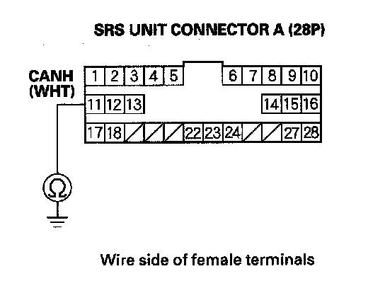
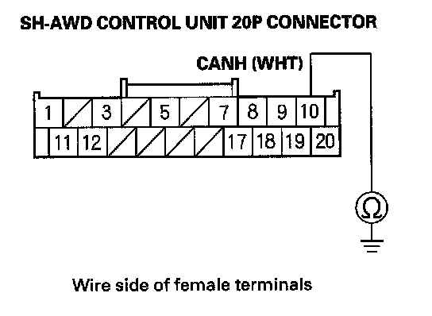
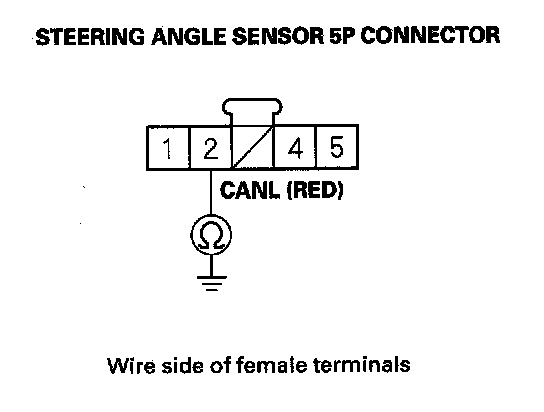
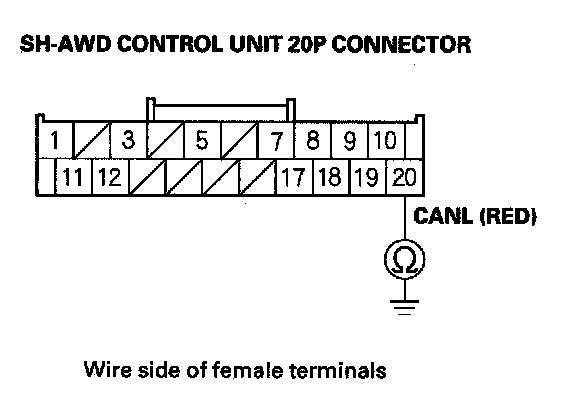

F-CAN Circuit Troubleshooting - Part 1
F-CAN Circuit Troubleshooting (Part 1)NOTE: Information marked with an asterisk (*) applies to the CANL Line.
1. Turn the ignition switch OFF.
2. Jump the SCS line with the HDS.
3. Disconnect PCM connector A (49P), then disconnect the HDS.
4. Measure resistance between PCM connector terminals A48 and A49.
Is there about 333-408 ohms?
YES - Go to F-CAN circuit troubleshooting (Part 2)
NO - Go to step 5.
5. Disconnect gauge control module connector A (12P).
6. Disconnect the VSA modulator-control unit 46P connector.
7. Disconnect SRS unit connector A (28P).
8. Disconnect the TPMS unit 20P connector.
9. Disconnect the yaw rate-lateral/longitudinal acceleration sensor 4P connector.
10. Disconnect the steering angle sensor 5P connector.
11. Disconnect the SH-AWD control unit 20P connector.
12. With active damper system: Disconnect the active damper control unit 14P connector.
13. With AcuraLink: Disconnect the AcuraLink control unit (XM receiver) connector A (20P).
14. Check for continuity between PCM connector terminals A48 and A49*.
Is there continuity?
YES - Repair short in the wires between PCM connector terminals A48 and A49*.
NO - Go to step 15.
15. Connect PCM connector terminal A48 to body ground with a jumper wire.
16. Check for continuity between gauge control module connector terminal A12 and body ground.
Is there continuity?
YES - Go to step 17.
NO - Repair open in the wire between the PCM (A48) and the gauge control module.
17. Check for continuity between VSA modulator-control unit 46P connector terminal No. 39 and body ground.
Is there continuity?
YES - Go to step 18.
NO - Repair open in the wire between the PCM (A48) and the VSA modulator-control unit.

18. Check for continuity between SRS unit connector terminal A11 and body ground.
Is there continuity?
YES - Go to step 19.
NO - Repair open in the wire between the PCM (A48) and the SRS unit.
19. Check for continuity between TPMS control unit 20P connector terminal No. 1 and body ground.
Is there continuity?
YES - Go to step 20.
NO - Repair open in the wire between the PCM (A48) and the TPMS control unit.
20. Check for continuity between yaw rate-lateral/longitudinal acceleration sensor 4P connector terminal No. 3 and body ground.
Is there continuity?
YES - Go to step 21.
NO - Repair open in the wire between the PCM (A48) and the yaw rate-lateral/longitudinal acceleration sensor.
21. Check for continuity between steering angle sensor 5P connector terminal No. 4 and body ground.
Is there continuity?
YES - Go to step 22.
NO - Repair open in the wire between the PCM (A48) and the steering angle sensor.

22. Check for continuity between SH-AWD control unit 20P connector terminal No. 10 and body ground.
Is there continuity?
YES -
- With active damper system: Go to step 23.
- Without active damper system: Go to step 24.
NO - Repair open in the wire between the PCM (A48) and the SH-AWD control unit.
23. Check for continuity between active damper control unit 14P connector terminal No. 1 and body ground.
Is there continuity?
YES -
- With AcuraLink: Go to step 24.
- Without AcuraLink: Go to step 25.
NO - Repair open in the wire between the PCM (A48) and active damper control unit.
24. Check for continuity between AcuraLink control unit (XM receiver) connector terminal A6 and body ground.
Is there continuity?
YES - Go to step 25.
NO - Repair open in the wire between the PCM (A48) and the AcuraLink control unit (XM receiver).
25. Remove the jumper wire from PCM connector A (49P).
26. Connect PCM connector terminal A49 to body ground with a jumper wire.
27. Check for continuity between gauge control module connector terminal A6 and body ground.
Is there continuity?
YES - Go to step 28.
NO - Repair open in the wire between the PCM (49P) and the gauge control module.
28. Check for continuity between VSA modulator-control unit 46P connector terminal No. 38 and body ground.
Is there continuity?
YES - Go to step 29.
NO - Repair open in the wire between the PCM (46P) and the VSA modulator-control unit.
29. Check for continuity between SRS unit connector terminal A12 and body ground.
Is there continuity?
YES - Go to step 30.
NO - Repair open in the wire between the PCM (49P) and the SRS unit.
30. Check for continuity between TPMS control unit 20P connector terminal No. 11 and body ground.
Is there continuity?
YES - Go to step 31.
NO - Repair open in the wire between the PCM (A49) and the TPMS control unit.
31. Check for continuity between yaw rate-lateral/longitudinal acceleration sensor 4P connector terminal No. 2 and body ground.
Is there continuity?
YES - Go to step 32.
NO - Repair open in the wire between the PCM (A49) and the yaw rate-lateral/longitudinal acceleration sensor.

32. Check for continuity between steering angle sensor 5P connector terminal No. 2 and body ground.
Is there continuity?
YES - Go to step 33.
NO - Repair open in the wire between the PCM (A49) and the steering angle sensor.

33. Check for continuity between SH-AWD control unit 20P connector terminal No. 20 and body ground.
Is there continuity?
YES -
- With active damper system: Go to step 34.
- Without active damper system: Go to step 35.
NO - Repair open in the wire between the PCM (A49) and the SH-AWD control unit.
34. Check for continuity between active damper control unit 14P connector terminal No. 8 and body ground.
Is there continuity?
YES -
- With AcuraLink: Go to step 35.
- Without AcuraLink: Go to step 36.
NO - Repair open in the wire between the PCM (A49) and active damper control unit.
35. Check for continuity between AcuraLink control unit (XM receiver) connector terminal A16 and body ground.
Is there continuity?
YES - Go to step 36.
NO - Repair open in the wire between the PCM (A49) and the AcuraLink control unit (XM receiver).
36. Reconnect the gauge control module 12P connector.
37. Measure resistance between PCM connector terminals A48 and A49.
Is there about 2.34 - 2.86 k ohms?
YES - Go to step 38.
NO - Substitute a known-good gauge control module. If the HDS identifies the vehicle, replace the original gauge control module.
38. Disconnect gauge control module connector A (12P).
39. Reconnect the VSA modulator-control unit46P connector.
40. Measure resistance between PCM connector terminals A48 and A49.
Is there about 2.34 - 2.86 k ohms?
YES - Go to step 41.
NO - Substitute a known-good VSA modulator-control unit. If the HDS identifies the vehicle, replace the original VSA modulator-control unit.
41. Disconnect the VSA modulator-control unit46P connector.
42. Reconnect SRS unit connector A (28P).
43. Measure resistance between PCM connector terminals A48 and A49.
Is there about 2.34 - 2.86 k ohms?
YES - Go to step 44.
NO - Substitute a known-good SRS unit. If the HDS identifies the vehicle, replace the original SRS unit.
44. Disconnect SRS unit connector A (28P).
45. Reconnect the TPMS control unit 20P connector.
46. Measure resistance between PCM connector terminals A48 and A49.
Is there about 2.34 - 2.86 k ohms?
YES - Go to step 47.
NO - Substitute a known-good TPMS control unit. If the HDS identifies the vehicle, replace the original TPMS control unit.
47. Disconnect the TPMS control unit 20P connector.
48. Reconnect SH-AWD control unit 20P connector.
49. Measure resistance between PCM connector terminals A48 and A49.
Is there about 2.34 - 2.86 k ohms?
YES - Go to step 50.
NO - Substitute a known-good SH-AWD control unit. If the HDS identifies the vehicle, replace the original SH-AWD control unit.
50. Disconnect the SH-AWD control unit 20P connector.
51. Reconnect the active damper control unit 14P connector.
52. Measure resistance between PCM connector terminals A48 and A49.
Is there about 2.34 - 2.86 k ohms?
YES - Go to step 53.
NO - Substitute a known-good active damper control unit. If the HDS identifies the vehicle, replace the original active damper control unit.
53. Disconnect the active damper control unit 14P connector.
54. Reconnect AcuraLink control unit (XM receiver) connector A (20P).
55. Measure resistance between PCM connector terminals A48 and A49.
Is there about 2.34 - 2.86 k ohms?
YES - Update the PCM if it does not have the latest software, or substitute a known-good PCM, then recheck. If the symptom/indication goes away with a known-good PCM, replace the original PCM.
NO - Substitute a known-good AcuraLink control unit (XM receiver). If the HDS identifies the vehicle, replace the original AcuraLink control unit (XM receiver).